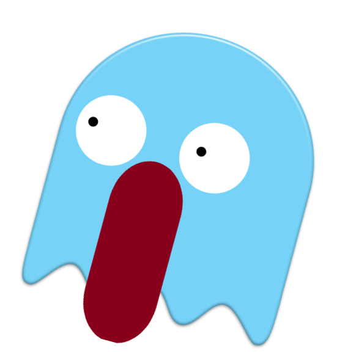

PROJECTS SECTION
You can see some photos of my projects on the current page or you can visit them by clicking one of these following links:
Puoi vedere alcune foto dei miei progetti sulla pagina corrente oppure puoi visitarli cliccando su uno dei link qui in alto.
